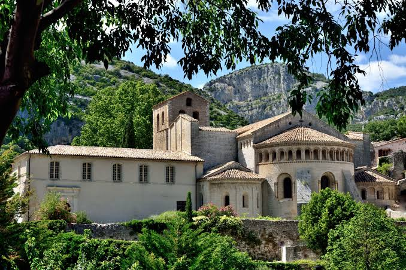

Abbaye de
Gellone


⟹ Édifices religieux ⟸
Une fondation carolingienne. L’histoire de Gellone commence au début du IXe siècle. Guilhem, ou Guillaume, comte de Toulouse et proche de Charlemagne, s’illustre notamment dans les campagnes franques avant de se rapprocher de Benoît d’Aniane et de choisir la vie monastique.
Vers 804 : naissance du monastère. Guilhem fonde dans le vallon de Gellone un établissement bénédictin lié à l’abbaye voisine d’Aniane. Il s’y retire et y meurt en 812. Sa tombe devient progressivement un lieu de vénération et le grand aristocrate carolingien entre dans la mémoire chrétienne sous le nom de saint Guilhem.

Reliques et pèlerinages. À partir du Xe siècle, le sanctuaire attire de nombreux fidèles autour du tombeau du fondateur et d’un fragment de la Vraie Croix. Gellone devient une étape importante des itinéraires médiévaux vers Saint-Jacques-de-Compostelle, notamment sur la voie d’Arles.
La grande abbaye romane. La prospérité permet, à partir des environs de 1030, une vaste reconstruction. Chevet, transept et nef témoignent du premier art roman méridional, tandis que le cloître est enrichi aux XIe et XIIe siècles de sculptures remarquables. Autour du monastère se développe le bourg qui prendra le nom de Saint-Guilhem-le-Désert.
Saint Guilhem, de l’histoire à la légende. Entre les XIe et XIVe siècles, les chansons de geste du cycle de Guillaume d’Orange transforment le fondateur en héros épique. Cette littérature contribue fortement à la renommée du sanctuaire dans l’Occident médiéval.
Déclin, guerres et réforme. À la fin du Moyen Âge, la commende affaiblit la communauté. Les guerres de Religion provoquent ensuite pillages et dégradations. Au XVIIe siècle, les bénédictins de la congrégation de Saint-Maur restaurent la vie régulière et réorganisent une partie du monastère.
Révolution et dispersion du cloître. En 1790, la suppression des ordres religieux met fin à près d’un millénaire de présence bénédictine. L’abbatiale est sauvée par son usage paroissial, mais les bâtiments conventuels sont vendus et le cloître sert de carrière. De nombreux éléments sculptés sont dispersés ; une importante série se trouve aujourd’hui aux Cloisters de New York.
Un patrimoine universel. Classée parmi les Monuments historiques dès 1840, l’ancienne abbaye est inscrite en 1998 au patrimoine mondial de l’UNESCO au titre des « Chemins de Saint-Jacques-de-Compostelle en France ». Depuis 1978, une communauté du Carmel Saint-Joseph assure de nouveau une présence religieuse dans les bâtiments monastiques.
Des origines carolingiennes à l’autonomie de Gellone. La fondation de Gellone s’inscrit dans le grand mouvement de réorganisation religieuse du Midi carolingien. Guillaume, comte de Toulouse et grand personnage de l’aristocratie franque, fonde le monastère vers 804 sous l’influence de Benoît d’Aniane. D’abord lié à la puissante abbaye d’Aniane, Gellone acquiert progressivement son autonomie : un abbé propre est attesté dès le Xe siècle. Au XIe siècle, les rapports entre les deux maisons deviennent conflictuels, notamment autour de la question de la dépendance de Gellone. En 1090, le pape Urbain II confirme un privilège d’exemption qui place l’abbaye sous la protection directe du Saint-Siège et renforce considérablement son indépendance.
Le culte de saint Guilhem. Après la mort du fondateur, sa mémoire prend une importance croissante. Son tombeau est déplacé et mis en valeur afin de permettre la vénération des fidèles. En 1066, Guillaume est officiellement reconnu comme saint Guilhem. Son culte, associé au prestige de sa carrière de guerrier devenu moine, contribue puissamment au rayonnement du monastère. Aux XIIe et XIIIe siècles, les chansons de geste du cycle de Guillaume d’Orange transforment encore sa mémoire : le personnage historique se mêle alors à un héros épique combattant les Sarrasins, ce qui diffuse la renommée de Gellone bien au-delà du Languedoc.
La relique de la Vraie Croix. La tradition attribue à Charlemagne le don à Guilhem d’un fragment de la Croix du Christ. Conservée dans le trésor de l’abbaye, cette relique devient, avec le tombeau du saint, l’un des grands pôles d’attraction du sanctuaire. La présence de ces reliques explique en partie l’afflux des pèlerins et l’importance prise par Gellone sur les routes de pèlerinage médiévales.
Une étape majeure vers Compostelle. Située à proximité de la voie d’Arles, l’abbaye accueille durant tout le Moyen Âge des voyageurs se dirigeant vers Saint-Jacques-de-Compostelle. Son prestige est tel que certains pèlerins empruntant des itinéraires plus septentrionaux se détournent pour venir vénérer saint Guilhem. L’accueil de ces foules influence directement l’organisation de l’abbatiale et favorise l’essor économique du bourg qui se développe autour du monastère.
Plusieurs églises successives. L’édifice actuel est le résultat d’une longue évolution. De la première église du IXe siècle, attribuée à la fondation de Guilhem, il ne reste pratiquement rien de visible. Une seconde abbatiale préromane est édifiée au Xe siècle ; des vestiges en ont été retrouvés dans la crypte, notamment lors de recherches archéologiques menées au XXe siècle. Après un incendie mentionné au XIe siècle, une nouvelle campagne monumentale donne naissance à l’essentiel de l’église romane conservée aujourd’hui.
L’abbatiale romane et son cloître. À partir du XIe siècle, l’abbaye se dote d’un vaste sanctuaire adapté à son prestige et au nombre croissant de pèlerins. Le chevet, le transept et la nef illustrent l’évolution de l’art roman languedocien. Le cloître, aménagé et enrichi au cours des XIe et XIIe siècles, reçoit un remarquable décor sculpté mêlant chapiteaux, colonnettes et éléments de marbre. À son apogée, l’établissement dirige un réseau de dépendances et de prieurés et joue un rôle religieux, économique et territorial majeur dans la vallée de l’Hérault.
Crises de la fin du Moyen Âge et époque moderne. Comme beaucoup de grandes abbayes, Gellone connaît ensuite des périodes de difficultés liées aux guerres, aux épidémies, à l’évolution de la vie monastique et au régime de la commende. Les guerres de Religion du XVIe siècle provoquent de graves dommages : le tombeau de saint Guilhem est notamment mutilé en 1568. Malgré des restaurations et une reprise de la vie religieuse, l’abbaye ne retrouve jamais complètement la puissance qui avait été la sienne au Moyen Âge.
De la Révolution à la sauvegarde patrimoniale. À la fin de l’Ancien Régime, l’établissement est rattaché à l’évêché de Lodève. La Révolution française entraîne la disparition de la communauté monastique et la dispersion d’une partie des biens. L’abbatiale devient église paroissiale, ce qui contribue à sa conservation, tandis que les bâtiments conventuels connaissent des usages divers. Le cloître est en partie démantelé ; plusieurs sculptures quittent le site au XIXe et au début du XXe siècle, certaines rejoignant notamment des collections muséales.
Redécouverte et restaurations. Les XIXe et XXe siècles voient croître l’intérêt historique et artistique pour Gellone. Fouilles, études architecturales et campagnes de restauration permettent de mieux comprendre les différentes phases de construction. La découverte de vestiges de la crypte et le remontage d’éléments du tombeau de saint Guilhem ont notamment renouvelé la connaissance du sanctuaire.
Un patrimoine de portée universelle. L’ancienne abbaye de Gellone est aujourd’hui l’un des monuments majeurs du patrimoine roman du Languedoc. Depuis 1998, elle figure parmi les monuments inscrits au patrimoine mondial de l’UNESCO au titre des « Chemins de Saint-Jacques-de-Compostelle en France ». Cette reconnaissance consacre à la fois son architecture, son histoire monastique et son rôle séculaire dans les circulations religieuses européennes.